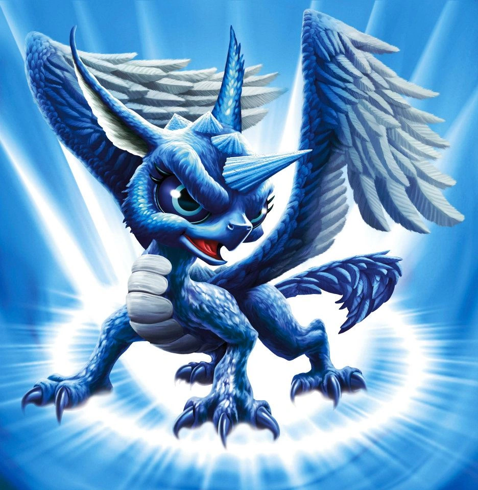
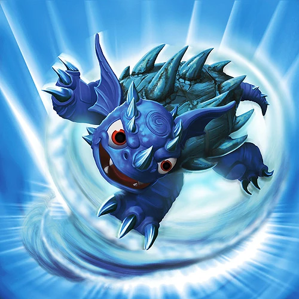
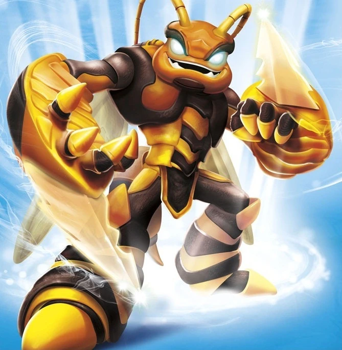
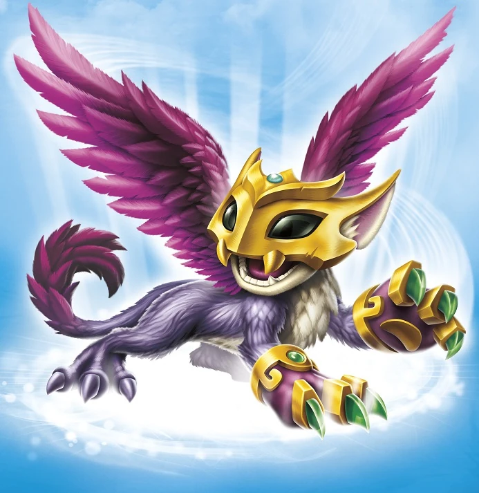
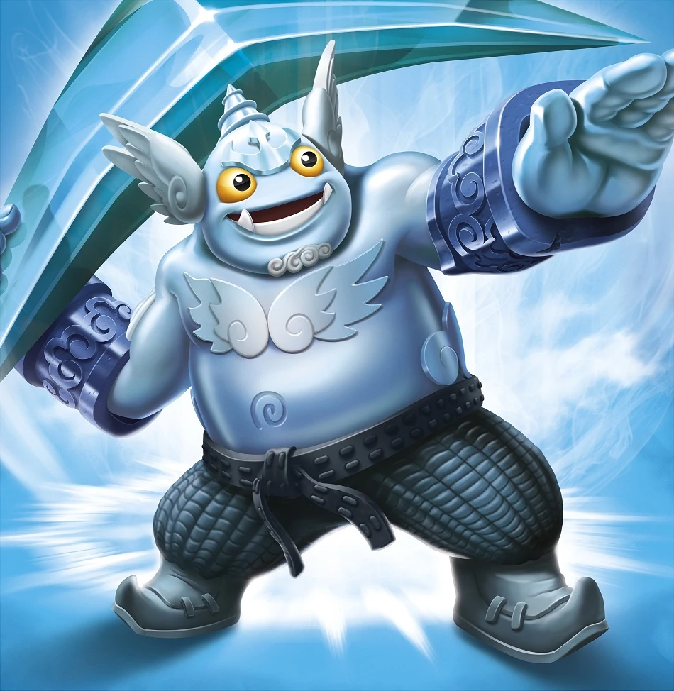
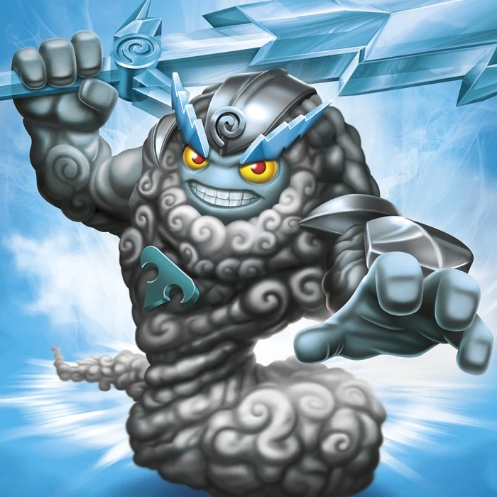
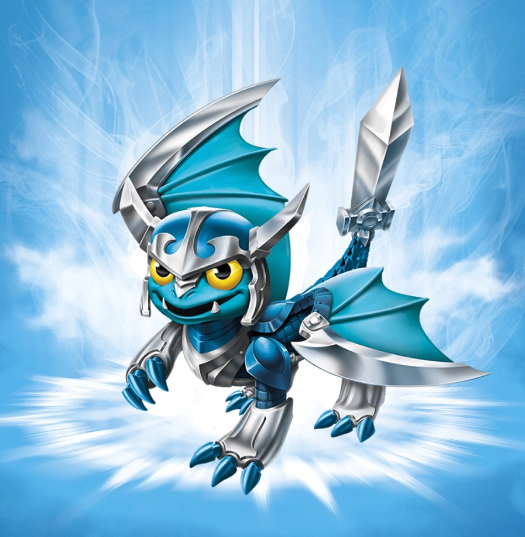
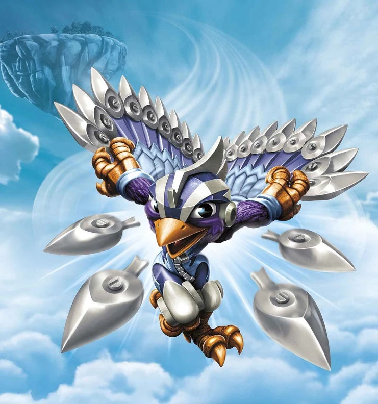

Whirlwind
Whirlwind is an air dragon with unicorn ancestry – two species that could not be more opposite in nature, which made her never quite fit in with either group. Other dragons were envious of her beauty, while unicorns shunned her for her ability to fly. But Whirlwind found peace within the dark and stormy clouds, where she learned to harness the tempest power within her. Despite her turbulent youth, she was the first to defend both dragons and unicorns when the trolls began hunting them, unleashing her ferocity in a brilliant and powerful rainbow that could be seen throughout many regions of Skylands. From that day forward, evil-doers would quake when dark clouds brewed, and run from the rainbow that followed the storm.
Sonic Boom
Long ago, Sonic Boom took refuge high atop a mountain peak in the far reaches of Skylands, hoping to keep her griffin hatchlings safe. But despite her precautions, a devious wizard tracked her down and placed a wicked curse on the griffin eggs. Once hatched, the young hatchlings can live for only mere moments before they magically return to their shells... only to be hatched again in an endless cycle. Wanting to prevent such evil from happening to others, Sonic Boom joined the Skylanders and has trained her young to defend Skylands each time they are hatched.

Warnado
Warnado was hatched in the fury of a rare and powerful Enchanted Twister. Although initially frightened and quite dizzy, over the passing years he grew to enjoy his whirling surroundings and learned many abilities and secrets of the Air Element. This led to Warnado becoming a powerful force and the only known turtle of his kind. Now, the only time he gets dizzy is when standing still.
Lightning Rod
Lightning Rod once lived in the majestic Cloud Kingdom, where his countless acts of heroism along with his winning smile and electric physique made him the most famous storm giant in the realm. He was a true celebrity, and the palace halls were littered with statues of the chiseled hero. But all the praise and admiration could never quite satisfy Rod, who yearned for something more. As luck would have it, he met an adventurous young dragon named Spyro, who told him fantastic stories of faraway places and dangerous adventures. Rod was spellbound, and he set off with Spyro to seek an audience with Eon to join the Skylanders.

Swarm
Swarm was once a prince from a proud race of mysterious insect warriors that had built their entire civilization inside a giant honeycombed pyramid. Growing up as one of the 9,000 members of the royal family, he was never permitted to leave the hive. But unlike his brethren, there was a magical quality to Swarm that caused him to grow much larger than the rest of his kind. No longer able to fit amongst the rest of his colony, the young prince broke the long standing tradition and stepped out into the open world - where his size and strength would be put to good use in the legendary battle between the Giants and the Arkeyans.
Jet Vac
Jet-Vac was the greatest, most daring flying ace in all of Windham. He was given his magical wings when he was young, as was the tradition for all Sky Barons. But when his homeland was raided, he chose to sacrifice his wings to a young mother so she could fly her children to safety. This act of nobility caught the attention of Master Eon, who sought out the young Sky Baron and presented him with a gift - a powerful vacuum device that would allow him to soar through the skies once again. Jet-Vac accepted the gift with gratitude, and now daringly fights evil alongside the other Skylanders.
Free Ranger
Free Ranger was hatched during a storm when a thunderous bolt of lightning struck his egg. From that very moment, his destiny was clear – he would become the greatest storm chaser ever known! He spent his entire life pursuing hurricanes, spinning inside tornados, and riding lightning. But a day came when he encountered a storm unlike any other. It was unnatural and ominous, billowing with evil, and leaving only desolation in its wake. Free Ranger was standing at its edge, moments from boldly leaping into it, when he was stopped by none other than Master Eon. The wise Portal Master told him that it was The Darkness that raged before them, and if he were up to the challenge, he could join the Skylanders to help defend against it in the Cloudbreak Islands.
Boom Jet
No matter what Boom Jet did, he always had to be the best. He could be seen day and night above his home in the Billowy Cloudplains gunning his engines and performing daredevil maneuvers as he trained to become the best sky surfer in all of Skylands. Unfortunately, Boom Jet never had a chance to compete for the championship because a day came that changed his life forever. The Darkness had come. And with his town on the verge of being completely consumed by the ominous evil force, Boom Jet took action. Using his incredible flying skills, he raced from house to house, rescuing all of the citizens and carrying them to safety… just before The Darkness destroyed his homeland. It was then he realized the protection of Skylands was more important than personal glory, so he sought out Master Eon to offer his services to the Skylanders.
Pop Thorn
Pop Thorn hails from a race of creatures known as Pufferthorns. Often considered one of the cutest creatures in all of Skylands, they are generally quite timid and puff out sharp spines when scared. It is this ability that long ago led to the unfortunate legacy of being used as combs by giant trolls everywhere, being the sharp spines are perfect for brushing out tangles from their long, matted hair. But not long ago, one Pufferthorn took a stand. Tired of his race being used for nothing more than good grooming, Pop Thorn used his naturally thorny abilities to stand up and fight back against the giant trolls. Soon after, Master Eon made Pop Thorn a Skylander. And to this day, no trolls dare to comb their hair.

Scratch
High in the peaks of Cats Eye Mountain sits a towering city of crystal and gold that can only be reached by creatures of the Air element. It was here that Scratch spent her youth soaring playfully in the clouds or exploring the endless number of crystal mines. One day, an army of Pirate Greebles arrived in a fleet of airships, looking to steal ancient magic crystals buried deep in the mountain. Donning specially made armour, Scratch led an epic battle against the pirates, using her incredible fighting skills to defend the crystals and the city. Tales of her heroism soon made their way to Jet-Vac, who traveled to Cats Eye Mountain and recruited Scratch to the Skylanders.

Gusto
Gusto was once a cloud wrangler in the peaceful Thunderclap Kingdom, where he learned to master the wind under the guidance of the mysterious Cloud Dragon. But a day came when a fleet of dragon hunters appeared on the horizon, seeking to capture the fabled creature. Despite the danger, Gusto stepped forward to defend it. The hunters could see that Gusto was not a soldier and didn’t even have a real weapon – just a "curved stick." However, he was no coward! And, throwing his large boomerang, Gusto hit his surprised opponents again and again – until the hunters surrendered and were forced to retreat. For standing up for himself and protecting the Cloud Dragon, Gusto was given a new Traptanium Boomerang and made part of the Trap Team!

Thunderbolt
Epically strong and heroically competitive, Thunderbolt grew up on legendary Mount Cloudpierce. Every year, his people held a contest to determine who would wield the Storm Sword – a legendary blade with the power to change the seasons in Skylands. To Thunderbolt, this would be a great honor. But on the day he won the contest and was about to be presented with the sword, a Frost Mage snatched it and plunged all of Skylands into a wintery deep-freeze. Undaunted, Thunderbolt bravely took chase. Riding twin bolts of chained lightning, he overtook the mage, reclaimed the sword, and restored balance to the weather systems in Skylands. For his heroic actions, Thunderbolt was made a member of the Trap Team, and he now uses his Traptanium Storm Sword to strike evil at every turn!

Blades
Blades came from a long line of dragons that guarded the dungeon of Scalos Castle, where the Golden Fear Serpent had slumbered for a century. Although it was considered an honor, Blades dreamed of becoming a knight so he could go on adventures in faraway lands. But one evening, a deafening roar shook the castle and a wave of fear swept over. The serpent had awoken! Fighting his fear with each step, Blades descended into the chamber. As he entered, the golden beast grinned and made Blades an offer - he would leave the kingdom unharmed and slumber for another hundred years, as long as Blades agreed to remain in the dungeon for eternity. Knowing the safety of the kingdom was more important than his ambition, Blades accepted the offer. Then suddenly, the fear was gone and the serpent vanished - for it turned out the only way to defeat the serpent was to confront his fear. News of this bravery soon found its way to Master Eon, who came to see Blades at once and made him a Skylander.
Fling Kong
As a royal protector of the legendary monkey idol Kubla-Wa, Fling Kong trained seriously in the mysterious art of Monk-Ru, a form of fighting using the power of air. He was a devoted student, always the first to arrive to training and the last to leave. One day, a troop of foul-smelling, well-armed Gorilla-Goos appeared, led by the infamous General Snot. Snot had heard stories about the idol, particularly that it was made of solid gold. The villains quickly seized control of the temple that housed the idol and were on the verge of taking it. But suddenly the smelly gorillas found themselves face to face with Fling Kong – who attacked with the power of a true Monk-Ru master! Using his flying rug and powerful vortex discs, he expertly defeated the Gorilla-Goos and saved the idol. Soon after, word of his actions spread to Master Eon. Now a Skylander, Fling Kong knocks the wind out of evil throughout all of the Skylands!

Stormblade
From the moment she left the nest, Stormblade had always pushed the boundaries, seeking to travel further than anyone had ever gone. At a young age, she made the bold leap off of her home island and plummeted through the deep blue sky in an attempt to find the bottom of Skylands – only to find no such bottom existed. This did not fulfill her curiosity, nor did it sway her belief there was something else beyond the limits of her world. Soon she built a custom ship, the Sky Slicer, and raced to the furthest reaches of Skylands in search of its end – but no end could be found. She wanted answers, and so she came to the one person that could help her – Master Eon. The Portal Master instantly saw the unquenchable thirst for exploration that resided in Stormblade, and asked her to join the Skylanders on a very special mission that would take her through the uncharted rifts between worlds!
Hurricane Jet Vac
Hurricane Jet Vac is the Supercharger counterpart of Jet Vac in Skylanders Superchargers. His signature vehicle is the Jet Stream.
Air Strike
Before he began training Brawlers, Air Strike trained birds – especially the rare Blue Zephyr Falcons. They were once one of Skylands' most endangered species, but Air Strike taught them how to defend themselves from predators... and not fly into windows. Birds would come from all over Skylands to learn his proven techniques. But despite their new defensive skills, the Blue Zephyr Falcons continued to be hunted by a band of evil trolls, who liked to use their eggs in blue-bacon omelets. So it was time for Air Strike to strike back! He journeyed to the peak of the Zephyr Mountain and single-handedly took down the trolls, rescuing the stolen eggs. After returning them to their mother, one of the eggs hatched, revealing a very energetic Falcon that would not leave his side. Air Strike named him “Birdie” – and together, they now use their skills to train Skylanders, despite Master Eon’s crippling fear of falcons.
Wild Storm
By the time he was 10 years old, Wild Storm had already mastered the Air Blade. With no family of his own, he spent much of his youth traveling throughout Skylands, offering his combat services to the highest bidder as a soldier of fortune. On one such occasion, he was hired by Kaos to break into a pirate outpost in Skyhighlands to steal their legendary gold detector. But little did Wild Storm know, he was only being used by Kaos to scout their defenses – and he was captured by the pirates! While imprisoned in the highest tower, the powerful winds blew through his cell, fueling his anger. But Wild Storm would not be contained! Harnessing the storm’s energy, he grew 3 times his size and exploded out of his prison – vowing to put a stop to Kaos once and for all. Soon after, he met Master Eon, who agreed to help him, provided Wild Storm would share his skills in swordsmanship with other Skylanders, as a Sensei of the Knight Class!
Bad Juju
Skylanders Trap Team
Bad Juju was first encountered in the Lair of the Golden Queen. When the Skylanders were battling their way through the Queen's homestead, they inadvertently awoke Bad Juju from her slumber, enraging her. Her attempts to subdue them with her magic failed and after her defeat, she was promptly trapped.
After the Skylanders defeated the Golden Queen, they took the ghostly skeleton back to the lair for her Villain Quest with Glumshanks, called "Remote Location". He explained to the heroes that they both wanted to stop the Queen, so the Troll built a spare remote in hopes of shutting it down for good. However, he accidentally dropped it down a sandpit and needed Bad Juju to use her whirlwind to pick it up for him. After her task was complete, she was awarded with Glumshanks' thanks, a new outfit, and the Beetle Hat.
Skylanders Imaginators
Just like her name suggests, Bad Juju had always been bad. From her humble beginnings as a witch doctor, where she put curses on her patients instead of curing them, to being the Golden Queen's right-hand sorceress, she had spent her entire life as a villain. Being captured by the Skylanders didn't do much to change her attitude either. At least, that was the case until the day she conjured up more then she bargained for - a son named Juju Junior. That was when she finally decided it was time to come to change her lifestyle. She didn't want to raise Juju Junior inside a prison thinking that his magical mother was a criminal. So she asked Master Eon to give her a chance to be a hero instead. As luck would have it, Eon was looking for a Swashbuckler Sensei who could help train Imaginators the value of being good. Not bad for Bad Juju.